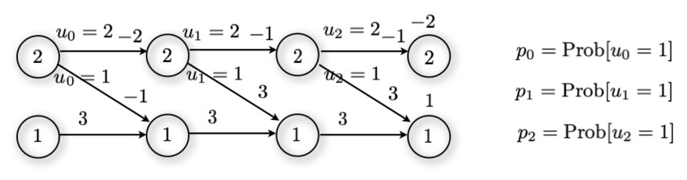

Unit 13 Exercises
4SC000 Optimal Control and Reinforcement Learning
These exercises accompany Unit 13 and its slides, with companion Jupyter notebooks.
Both problems concern the same transition diagram, and both ask for a gradient that can be written down exactly. That is the point of the pair: the quantity REINFORCE and actor-critic estimate from sampled trajectories is, on a problem this small, something you can also compute in closed form by hand. Doing it once by hand is the clearest way to see what the sampled estimators are estimating.
The horizontal axis is the stage, \(k\in\{0,1,2,3\}\), and at each stage the system is in one of two states, drawn as the two rows. The number on an edge is the cost of that transition; the number floating beside a stage-\(3\) node is its terminal cost, \(g_3(2)=-2\) and \(g_3(1)=1\).
A decision is taken only in the top state. From state \(2\) at stage \(k\) the action \(u_k=1\) moves to the bottom row and \(u_k=2\) stays in the top row, and the policy is randomised with \(p_k=\text{Prob}[u_k=1]\). From state \(1\) there is a single outgoing edge, so no decision and nothing to differentiate. Once the trajectory drops to the bottom row it stays there.
The parameters \(p_0,p_1,p_2\) are therefore the whole policy, and the value is a function of them alone – there is no other randomness in the problem.
1 Core exercises
Problem 13.1 Consider the transition diagram below. Compute the gradient of the value of state \(2\) at the initial stage with respect to the probabilities \(p_0\), \(p_1\), \(p_2\).

Work backwards from the terminal stage, carrying the \(p_k\) along as symbols. Write \(J_k(j)\) for the value of state \(j\) at stage \(k\).
Stage \(2\). From the bottom state there is one edge, of cost \(3\), into a terminal state of cost \(1\):
\[J_2(1)=3+1=4.\]
From the top state the action \(u_2=1\) costs \(3\) and lands on the terminal state of cost \(1\), while \(u_2=2\) costs \(-1\) and lands on the terminal state of cost \(-2\):
\[J_2(2)=p_2\,(3+1)+(1-p_2)(-1-2)=4p_2-3(1-p_2)=7p_2-3.\]
Stage \(1\). The bottom state again has a single edge, of cost \(3\):
\[J_1(1)=3+J_2(1)=7.\]
From the top state, \(u_1=1\) costs \(3\) and moves to the bottom row, \(u_1=2\) costs \(-1\) and stays in the top row:
\[J_1(2)=p_1\big(3+J_2(1)\big)+(1-p_1)\big(-1+J_2(2)\big)=7p_1+(1-p_1)(7p_2-4).\]
Stage \(0\). Finally, \(u_0=1\) costs \(-1\) and moves to the bottom row, \(u_0=2\) costs \(-2\) and stays in the top row:
\[J_0(2)=p_0\big(-1+J_1(1)\big)+(1-p_0)\big(-2+J_1(2)\big)=6p_0+(1-p_0)\Big(-2+7p_1+(1-p_1)(7p_2-4)\Big).\]
Differentiating this expression term by term gives
\[\nabla_{(p_0,p_1,p_2)}J_0(2)=\begin{bmatrix}6-\Big(-2+7p_1+(1-p_1)(7p_2-4)\Big) & (1-p_0)(11-7p_2) & 7(1-p_0)(1-p_1)\end{bmatrix}.\]
It is worth also expanding the value itself, both as a check and because Problem 13.2 needs it:
\[J_0(2)=7p_0p_1p_2-11p_0p_1-7p_0p_2+12p_0-7p_1p_2+11p_1+7p_2-6,\]
whose partial derivatives are \(12-11p_1-7p_2+7p_1p_2\), \(\;11-11p_0-7p_2+7p_0p_2\) and \(7-7p_0-7p_1+7p_0p_1\), matching the three entries above.
What the three entries are. Each one factors into two pieces, and the factorisation is not a coincidence:
\[\frac{\partial J_0(2)}{\partial p_k}=\underbrace{\text{Prob}\big[\text{decision }k\text{ is reached}\big]}_{\text{how often the choice is made}}\times\underbrace{\big(Q_k(2,1)-Q_k(2,2)\big)}_{\text{how much the choice matters}}\]
| \(k\) | probability of reaching the decision | \(Q_k(2,1)-Q_k(2,2)\) | \(\partial J_0(2)/\partial p_k\) |
|---|---|---|---|
| \(0\) | \(1\) | \(8-J_1(2)\) | \(12-11p_1-7p_2+7p_1p_2\) |
| \(1\) | \(1-p_0\) | \(11-7p_2\) | \((1-p_0)(11-7p_2)\) |
| \(2\) | \((1-p_0)(1-p_1)\) | \(7\) | \(7(1-p_0)(1-p_1)\) |
Reading the second factor at stage \(2\): choosing \(u_2=1\) is worth \(3+1=4\) and choosing \(u_2=2\) is worth \(-1-2=-3\), a difference of \(7\) – exactly the coefficient in the third entry. At stage \(1\) the difference is \(\big(3+J_2(1)\big)-\big(-1+J_2(2)\big)=7-(7p_2-4)=11-7p_2\), the second entry. And at stage \(0\) the decision state is the initial state, reached with probability one, which is why the first entry has no probability factor at all.
This is the policy gradient theorem, on a problem small enough to write out: the derivative with respect to a decision’s probability is how often you get to make that decision, times how much the two actions differ in value. Nothing else enters. In particular, if a state is never reached its parameter has zero gradient – raise \(p_0\) to \(1\) and the second and third entries vanish, because the trajectory then leaves the top row immediately and \(p_1,p_2\) stop mattering.
Which direction is downhill. All three entries are non-negative on \([0,1]^3\). The first can be rewritten as \((1-p_1)(12-7p_2)+p_1\), a weighted average of \(12-7p_2\ge 5\) and \(1\), so it is at least \(1\) and never vanishes; the other two are products of non-negative factors, vanishing exactly when the corresponding decision state becomes unreachable. So the value is non-decreasing in each \(p_k\), and the minimum over the cube sits at the corner
\[p^\star=(0,0,0), \qquad J_0(2)=-6,\]
i.e. the deterministic policy that takes \(u_k=2\) at every stage and rides the top row to the terminal cost \(-2\). Enumerating all eight deterministic policies confirms it: running over \((u_0,u_1,u_2)\in\{1,2\}^3\) in that order gives \(6,\,6,\,6,\,6,\,5,\,5,\,1,\,-6\), and \(-6\) is the best. The randomised parametrisation has not introduced a better policy than the best deterministic one – as it cannot, since the value is linear in each \(p_k\) separately – it has only made the search differentiable.
Problem 13.2 For the same transition diagram (Fig. 1) as in Problem 13.1, suppose that we want a time-invariant policy, so that \(p=p_0=p_1=p_2\). Compute the gradient of the value of state \(2\) at the initial stage with respect to \(p\).
There is now a single parameter feeding three places in the expression, so the chain rule says the derivative is the sum of the three partial derivatives of Problem 13.1, evaluated along the diagonal \(p_0=p_1=p_2=p\):
\[\frac{dJ_0(2)}{dp}=\begin{bmatrix}6-\Big(-2+7p+(1-p)(7p-4)\Big) & (1-p)(11-7p) & 7(1-p)^2\end{bmatrix}\begin{bmatrix}1\\1\\1\end{bmatrix}.\]
Expanding the three entries, which are \(12-18p+7p^2\), \(11-18p+7p^2\) and \(7-14p+7p^2\), and adding them:
\[\frac{dJ_0(2)}{dp}=21p^2-50p+30.\]
As a check, substitute \(p_0=p_1=p_2=p\) into the expanded value of Problem 13.1 before differentiating:
\[J_0(2)\big|_{p_0=p_1=p_2=p}=7p^3-25p^2+30p-6 \quad\Longrightarrow\quad \frac{dJ_0(2)}{dp}=21p^2-50p+30,\]
the same answer by the other route.
What this derivative says. Its discriminant is \(50^2-4(21)(30)=2500-2520=-20<0\) and the leading coefficient is positive, so \(dJ_0(2)/dp>0\) for every real \(p\) – there is no stationary point to find. On the unit interval the derivative falls from \(30\) at \(p=0\) to \(1\) at \(p=1\), so the value climbs steadily from \(J_0(2)=-6\) at \(p=0\) to \(J_0(2)=6\) at \(p=1\). Gradient descent on \(p\) therefore runs to the boundary, and the answer agrees with Problem 13.1: take \(u_k=2\) always.
A caveat the arithmetic makes visible. The optimum here is on the boundary of the feasible set, and \(p\) is a probability, so plain gradient descent would have to be projected back into \([0,1]\) at every step. This is the usual reason for parametrising the policy rather than optimising the probabilities directly: writing \(p=\sigma(\theta)\) with \(\sigma\) the logistic function and descending in \(\theta\) keeps every iterate feasible and simply drives \(\theta\to-\infty\), approaching the deterministic policy without ever reaching it. The deck’s \(\text{Prob}[u_1=1]=\theta\), \(\text{Prob}[u_2=1]=\theta^2\) example makes the same point with a different map, and the Gaussian policy in the Unit 13 notebooks is the continuous-action version: there the collapse to a deterministic policy shows up as the policy’s standard deviation shrinking toward zero.
And the one this pair is really about. Both gradients here were obtained by writing the value in closed form and differentiating, which needed the full model – every transition and every cost in the diagram. REINFORCE and actor-critic estimate these same numbers from sampled trajectories alone. On a diagram this size that trade looks like a bad one; it becomes the only option as soon as the state space stops fitting on a page. What the sampling costs, in variance and in the local optima it can settle into, is measured in A_13_MountainCarREINFORCE.ipynb and A_13_MountainCarActorCritic.ipynb.